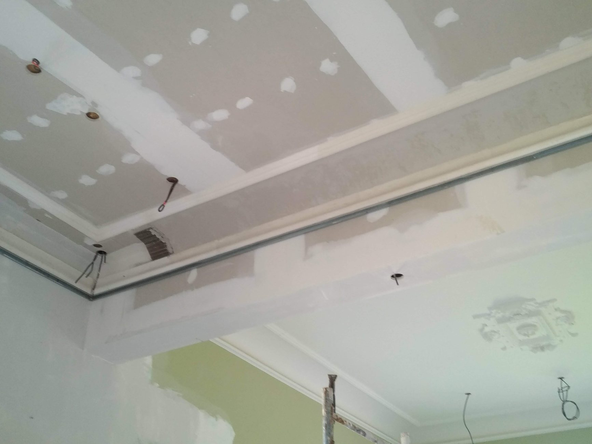
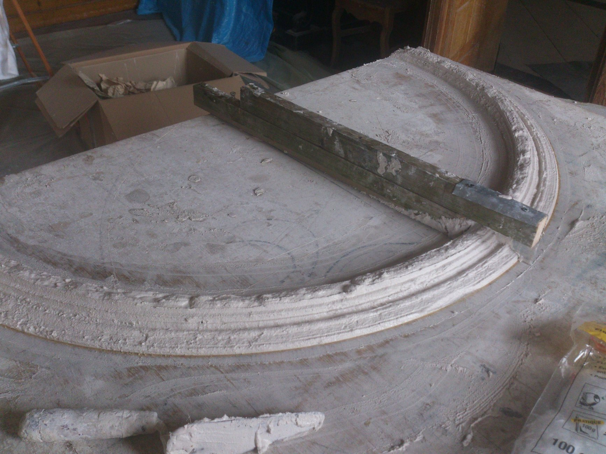
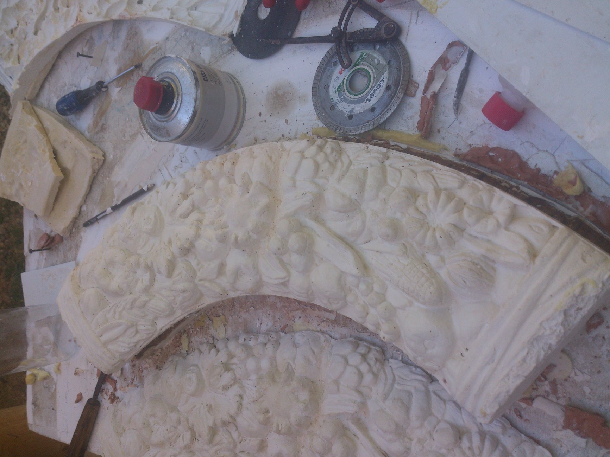
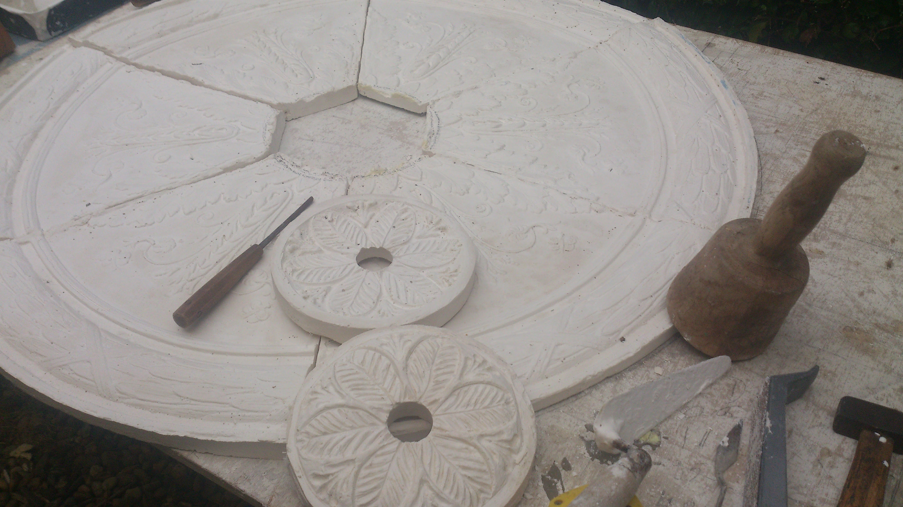
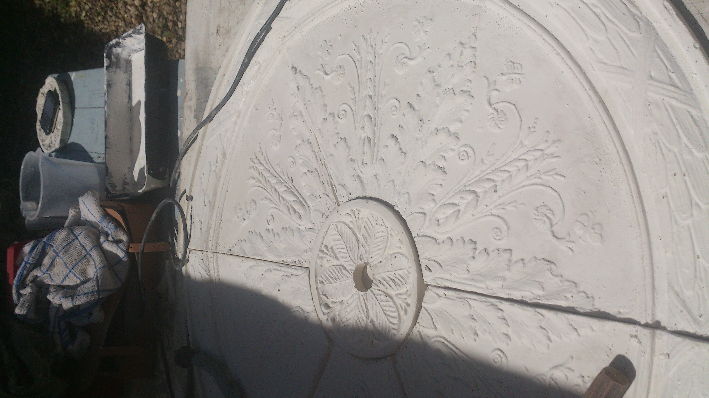
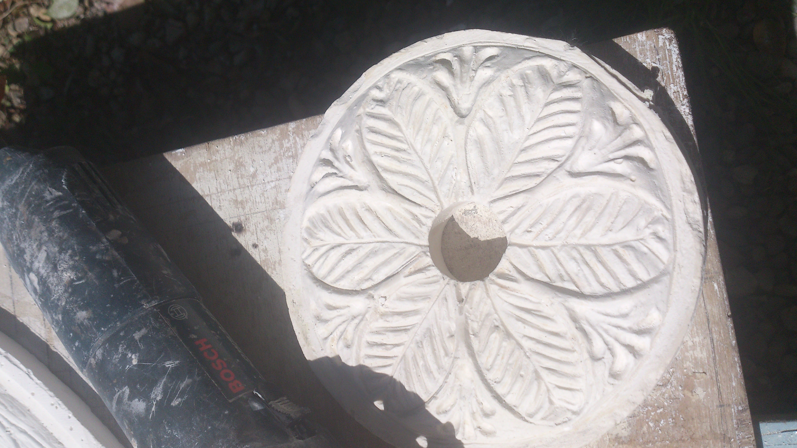
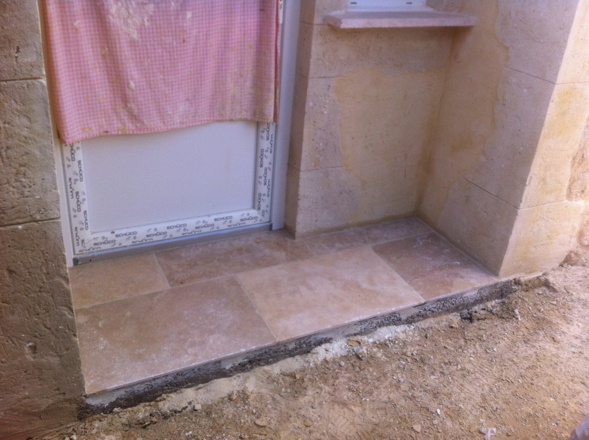

Des chantiers concrets, jusque dans les finitions.
Une sélection de réalisations montrant le travail de plâtrerie, de restauration, de décoration en plâtre, de chaux, de carrelage et d’enduit traditionnel.
Un travail artisanal, documenté étape par étape.
Chaque projet est présenté avec les photographies de chantier disponibles dans votre dépôt GitHub.
Structurer et transformer les espaces.
Travaux de plâtrerie et de mise en œuvre des plafonds : préparation des supports, plaques de plâtre, joints et finitions.




Des éléments décoratifs réalisés sur mesure.
Création, pose et finition de corniches, moulures et éléments décoratifs en plâtre, adaptés au style du bâtiment.


Redonner vie aux décors anciens.
Restauration et création de décors en plâtre avec un travail minutieux des formes, reliefs et finitions.










Travailler la matière et l’aspect minéral.
Réalisation de décors et finitions à base de mortier de chaux, avec recherche d’un aspect pierre naturel.




Des surfaces propres et durables.
Pose de carrelage et de faïence avec attention portée aux alignements, découpes, joints et finitions.


Un savoir-faire artisanal mis à l’honneur.
Application et finition d’enduits en plâtre traditionnel sur murs et plafonds, avec une préparation soignée des supports.

Un savoir-faire artisanal mis à l’honneur.
Article consacré au savoir-faire artisanal d’Eric Pellegrino et à son travail de restauration et de sculpture.

Un projet de rénovation ?
Parlons-en.
Déplacement et devis gratuits dans le Gers.